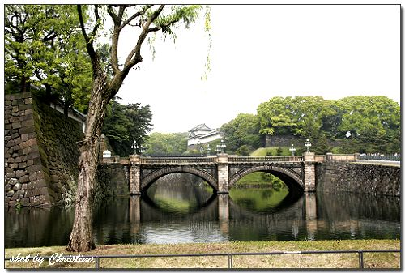
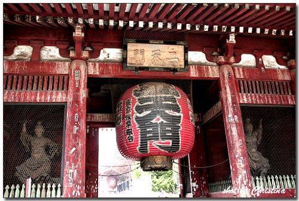
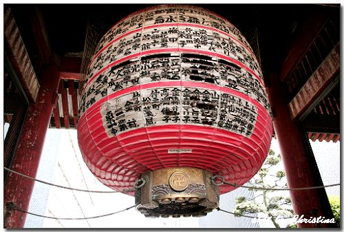
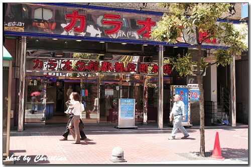
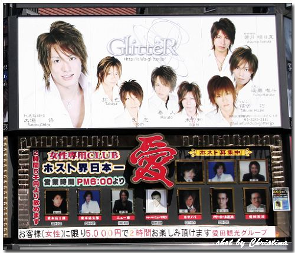
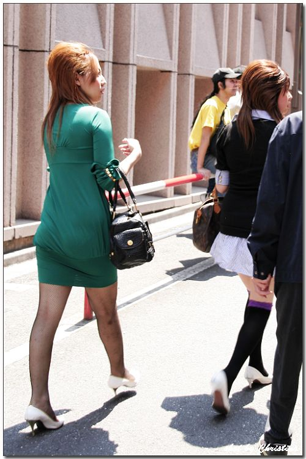
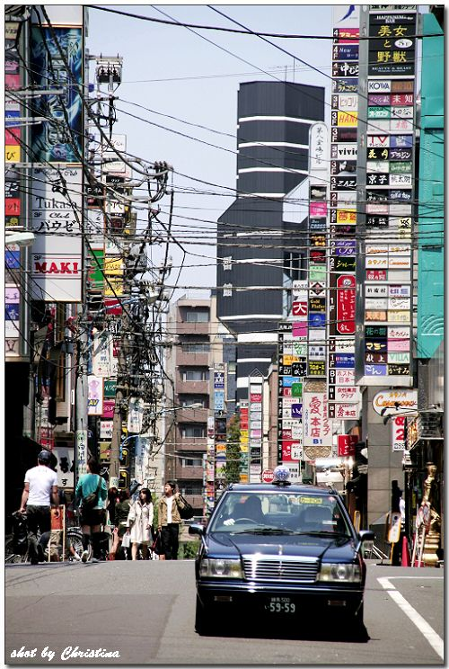

打开撰写栏，想着是继续写“4/日本之行”还是补充一下前面的记录？还是先补充再继续下面的文字吧。
东京的中心是皇宫，也就是皇居，它是天皇和其家庭成员居住的宫殿。皇宫大部分隐蔽在厚厚的城墙，葱郁的树木和江户城堡时期的护城河内。每年的12月23日和2月2日是天皇诞生日，人们可以在这两天的9：30~15：00见到天皇。
皇居外守卫的士兵。

皇居外的二重桥是日本公认的标志，只有新年和天皇生日时，公众才获准过桥站在皇宫附近接受天皇的问候。

浅草一带的人被称为江户人。浅草是风雅与低俗并存的地方，这只有在江户才能看到的景象。位于浅草的浅草寺可能是这个地区最古老的寺庙，它吸引了来自各地的人们，他们在此消费促进了浅草的繁荣。


浅草寺写了文字的白色灯笼，据说灯笼上的字是一些店铺的名字。店家为了祁福生意兴隆、财源广进，向寺院捐钱，祈求神灵的护佑。

每年元旦前后，前来朝拜的香客，人山人海。你看这位游客在将香炉里的烟往身上扑，日本人认为这样可以消除病灾。信不信由你：）

这个人正在将抽到的坏签系在寺庙的绳子上。

浅草寺内合影的日本女孩子们。

新宿SUMITOMO被称为东京的副中心，位于市区西南部，大街上有许多著名的百货公司，新宿西口是一条相机街，从新机种到标准型相机应有尽有。歌舞伎町是新宿著名的娱乐区，入夜，各种表演活动陆续登场，令人目不暇接。这里既有现代的流行摇滚，也有古典音乐及歌舞伎演出。那些花街柳巷，用日本话说叫“欢乐街”。兴盛的色情业，出没其间的明星富婆们，给新宿这“日本第一繁华街”增添了别样的风情。
我们仅仅是在艳阳高照时步行走过歌舞伎町，零星可见三五成群的男孩和女孩，大多金黄色头发，头发吹出各种蓬高的形状，让我联想到日本动画片《我是大哥大》里两个爱打架的“坏小子”。他们穿的衣服看上去质地不是太好，但却非常时尚，女孩子的面孔上涂了厚厚的粉，看上去很妖娆，但却一副纯情装扮。歌舞伎町也有牛郎店，社长的照片也贴在门口的广告上，广告语为“成功最短的路......”据说有个牛郎和他的客人结婚了，对方是个很有钱的白领。有的牛郎每月能挣几百万，有一个一个月挣了上千万，电视台还采访他。




东京都市厅48层顶楼鸟瞰东京全貌

身后那座桥好象叫东京桥，下面的海里有人在玩帆船，看似惬意的生活，但身为游客的我依然感受得到在日本生活的压抑。

（明天有空再写）
10 Responses to “东京/日本之行”
2007-05-09
出片出片了啊!!
48层!拍出来有点像直升飞机上拍的:)
2007-05-09
现在的天皇生日是12月23日。2月2日是什么？我不知道啊。
应该你们导游说错了。
皇居里面一般老百姓不能进去的。所以很大面积里面还保存江户时代一样的自然。据说有野生鹿，野猪。
5月4号，我也在浅草。跟朋友吃饭的。我们没见面，太可惜。哈哈。
2007-05-09
每年的12月23日和2月2日是天皇诞生日是书上看到的，中国翻译弄错了吗？
5月2日我在浅草，谁让你是猪脑子，号码少一个8，是不是有意的？:P
2007-05-09
2月2日是“猫の日”。与天皇没有关系。哈哈。
两个女孩后影，她们是KTV小姐。
普通女孩没有那么坏的样子。
东京的KTV小姐也工资很厉害的。一个月赚100－200万日元，比较与一般女孩的十倍。
她们下班以后去牛郎店花钱。我真讨厌。
2007-05-09
拍得挺不错的,支持下.第一次来到贵BLOG.
MSN:xiaodi3724392@hotmail.com
2007-05-10
看你拍的图片和写的文章游览一下日本.喜欢你身上穿的那件白色衣裳.
2007-05-10
最后一张墨镜一戴，拽的很。这日本很有意思啊～完全和国内不同的风格。
2007-05-11
发现了，日本人在照相时真的很喜欢把手摆成V字型！
2007-05-17
写的很真实,你去过的地方我都去过,可惜我写不出你那么细致,呵呵....向你学习
2008-11-18
Lady
You are very prettyHahaLeave A Reply
存档只读，评论已关闭。